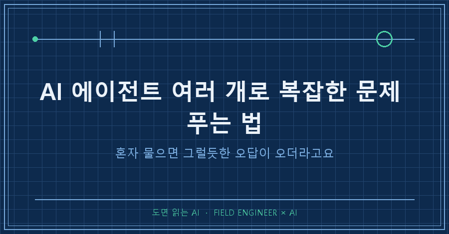
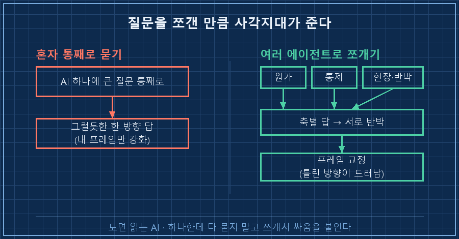
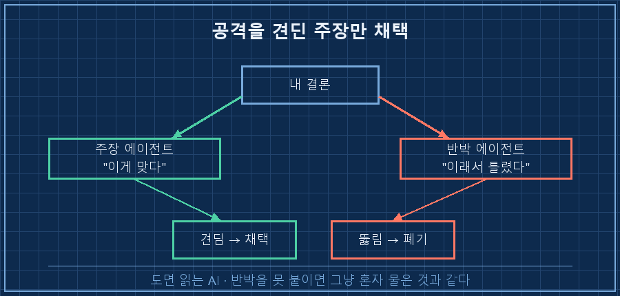
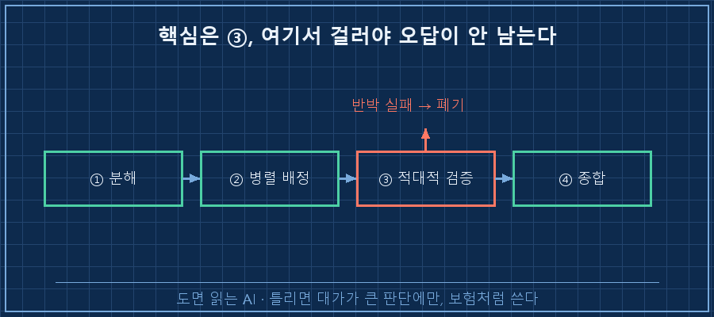

결론부터 적어둘게요.
틀리면 대가가 큰 판단 문제는, AI 하나한테 통째로 맡기면 그럴듯한 오답이 나와요.
문제를 여러 조각으로 쪼개서 각 조각을 전담 AI 에이전트한테 맡기고, 나온 답을 서로 반박시키면 그제야 처음의 틀린 방향이 드러납니다.
이걸 AI 에이전트 오케스트레이션이라고 불러요. 이 글은 그걸 실제 업무에 써본 기록이에요.
사실 얼마 전까지 저도 AI한테 큰 질문을 그냥 통째로 던졌어요.
답이 매끄럽게 나오면 "오 되네" 하고 넘어갔고요.
그러다 제 판단을 통째로 뒤집는 일을 한번 겪고 나서 방식을 바꿨습니다.
저는 15년차 제어 엔지니어예요.
수소 설비 제어판넬 설계하고, PLC 코드 짜고, 현장서 결선 확인하는 게 일이죠.
요즘은 이렇게 판단이 걸린 무거운 일까지 AI를 붙여서 풉니다.
1. 큰 숙제를 통째로 물었더니 그럴듯한 오답이 왔어요
받은 숙제는 이거였어요.
대형 설비에 큰돈을 넣을지 말지, 그 설비가 만들어내는 제품 원가가 목표까지 내려가느냐.
제 첫 접근은 단순했어요.
"부품값(재료비)을 깎으면 원가가 내려가겠지."
제 본업이 원래 부품 고르고 판넬 꾸리는 일이다 보니, 자연스럽게 그쪽부터 손이 갔어요.
며칠을 부품 단가표랑 씨름하면서, 어디를 어떻게 깎으면 몇 퍼센트가 빠지는지 정리한 검토 의견서를 한 장 만들었어요. 나름 그럴듯했죠.
근데 다 만들어놓고 뭔가 걸렸어요.
이게 정말 핵심 지렛대가 맞나. 내가 익숙하고 편한 자리만 파고 있는 건 아닌가.
그 찜찜함이 이번엔 그냥 안 넘어가지더라고요.
2. 그래서 AI 하나 대신 아홉을 붙였어요
이번엔 문제를 통째로 안 물었어요.
서로 안 겹치는 조각으로 먼저 쪼갰어요.
- 이 원가는 실제로 뭘로 구성되나
- 조직에서 우리가 진짜 통제할 수 있는 건 뭔가
- 현장 실측 데이터는 뭐라고 말하나
- 내가 쓴 그 의견서를 적으로 놓고 공격하면 어디가 뚫리나
그리고 각 조각에 전담 에이전트를 하나씩 붙여서 동시에 조사시켰어요.
핵심 주장 몇 개는 일부러 반박 전담 에이전트한테 "이거 틀렸다고 쳐봐"로 공격시켰고요.
workflow: 문제 다시 정의 (에이전트 9)
├ 병렬 리서치 5축
│ (원가구조 / 통제가능성 / 현장 실측 / 공개 문헌 / 기존안 감사)
├ 적대적 교차검증 3건 (내 주장 → 반박 전담 에이전트)
└ 종합
소요 약 16분 / 처리량 84만 토큰
3. 결과: 내가 만든 의견서를 내가 반려했어요
분해해보니 숫자가 이렇게 나왔어요.
[같은 문제, 접근을 바꾸니]
처음 프레임(부품값 깎기) : 원가 효과 0.3% 미만 ← 헛다리
다시 쪼갠 원가 구조
· 전력비 : 원가의 7~9할을 지배
· 설비 투자비 : 8% 안팎
· 부품값 : 30% 깎아도 원가엔 소수점 수준
→ 지렛대가 처음부터 틀렸다전력비가 이런 설비의 제품 원가를 지배한다는 건 공개된 산업 문헌에서도 확인되는 사실이에요(2026-07 기준).
제가 공들여 만든 부품 절감 의견서는, 방향 자체가 틀린 문서였던 거죠.
그래서 스스로 반려했습니다.
아깝지 않았냐고요? 아까웠어요..
근데 틀린 방향으로 몇 주를 더 갔으면 그게 훨씬 아팠을 거예요.
왜 이런 일이 생기냐면요.
통째로 물으면 AI는 내가 던진 프레임(부품값) 안에서 제일 그럴듯한 답을 골라줘요.
프레임 자체를 의심하진 않아요.
근데 "원가가 실제로 뭘로 되어 있나"를 딴 에이전트한테 따로 물으면, 내 프레임 밖의 사실(전력비)이 튀어나오는 거예요.

4. 그대로 따라 할 수 있게 4단계로 정리하면
전제조건: 서브에이전트나 워크플로를 돌릴 수 있는 AI 도구(2026-07 기준 여러 종 나와 있어요), 그리고 문제를 글로 적어둔 자료 한 뭉치.
1. 분해 — 큰 질문을 서로 안 겹치는 하위 질문 4~6개로 쪼갠다. "원가 구조? 통제 범위? 현장 데이터? 내 기존안의 약점?"
2. 병렬 배정 — 하위 질문마다 전담 에이전트 하나씩. 동시에 조사시킨다.
3. 적대적 검증 — 핵심 결론은 반드시 반박 전담 에이전트한테 공격시킨다. 견딘 것만 채택.
4. 종합 — 조각 답을 다시 하나로 모아 처음 프레임이 맞았는지 재판정한다.
확인 방법: 분해가 제대로 됐다면 종합 단계에서 처음 생각이 흔들립니다.
처음 답이 그대로 확인만 되고 끝나면, 분해가 얕았던 거예요.
나를 전혀 안 불편하게 하는 오케스트레이션은 대개 혼자 물은 거랑 결과가 똑같아요.
저는 3단계(적대 검증)를 처음엔 대충 했다가, 반박 에이전트가 슬쩍 물러서길래 다시 세게 붙였더니 그제야 프레임이 뒤집혔어요.

| 방식 | AI 하나에 통째로 | 에이전트 여러 개로 분해 |
|---|---|---|
| 답 속도 | 빠름 | 느림(십수 분) |
| 답 모양 | 매끄러움 | 거칠지만 다층적 |
| 내 프레임 | 강화됨 | 의심·교정됨 |
| 틀린 방향 | 못 잡음 | 드러남 |
자주 묻는 질문
Q. 에이전트를 꼭 아홉 개나 써야 하나요?
숫자가 핵심이 아니에요. 하위 질문 수만큼이면 돼요. 넷이면 넷, 여섯이면 여섯. 중요한 건 개수가 아니라 "서로 안 겹치게 쪼갰나"랑 "반박을 붙였나"예요. 저도 다음엔 더 적게 쓸 것 같아요.
Q. 매번 이렇게 오래 걸리게 하나요?
아뇨. 단순한 질문은 그냥 하나한테 물어요. 이 방식은 틀리면 대가가 큰 판단에만 씁니다. 큰돈이 걸렸거나, 방향을 잘못 잡으면 몇 주가 날아가는 문제요. 비용이 아니라 보험이라고 생각하면 마음이 편해요.
정리하면, AI를 잘 쓴다는 건 좋은 질문 하나를 던지는 게 아니라 하나의 큰 질문을 여러 조각으로 잘 쪼개는 일에 가까웠어요.
그리고 그 조각들끼리 싸움을 붙이는 거요.
지금 AI한테 통째로 물어서 "그럴듯한데 왠지 찜찜한" 답을 받아둔 문제, 하나쯤 있지 않으세요?
이렇게 AI를 실무 판단에 붙여보고 깨진 과정은 makefield.ai에 하나씩 옮겨 적고 있습니다.
---
태그: #AI에이전트 #AI에이전트오케스트레이션 #멀티에이전트 #AI문제해결 #AI업무자동화 #AI실무 #AI협업 #서브에이전트 #AI워크플로 #의사결정AI #제조업AI #현장엔지니어 #AI활용법 #AI분석 #도면읽는AI